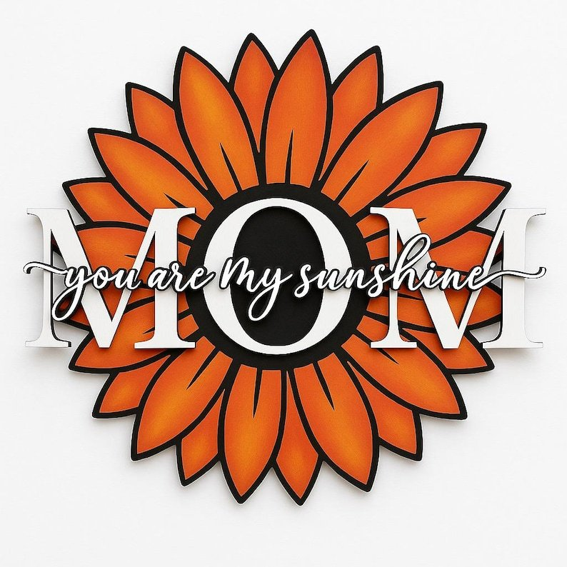
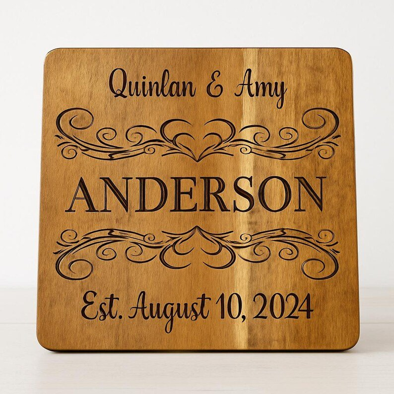
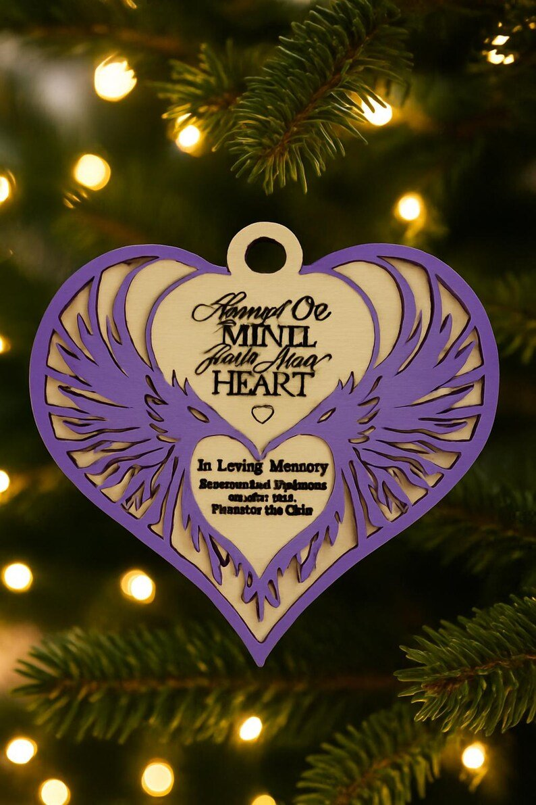
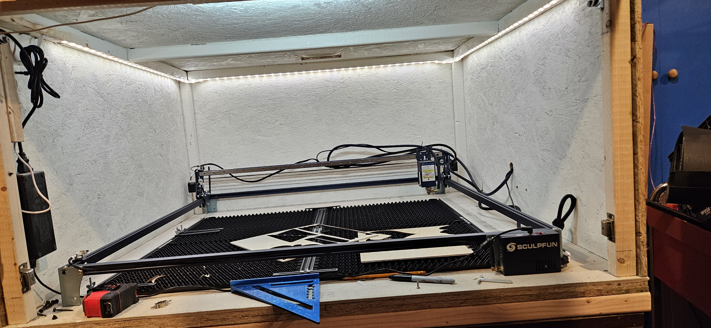
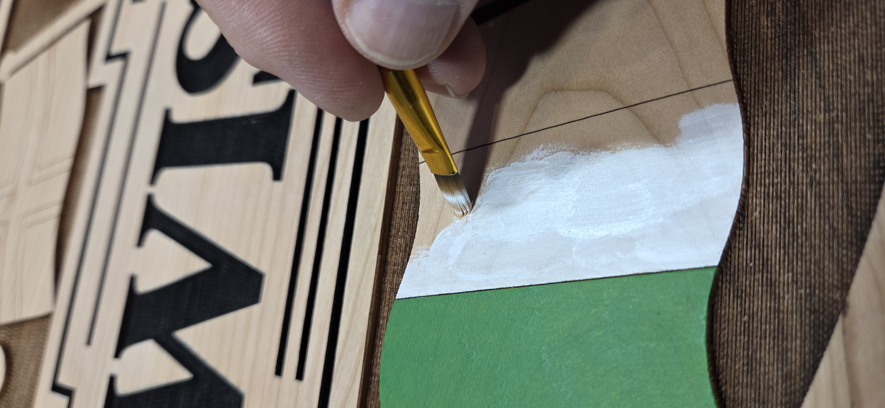

Laser Precision Personalized Perfection
Personalized gifts
crafted to be remembered.
Personalized gifts, signs, keepsakes, and custom pieces—made to order and finished by hand with careful attention to every detail.
Handcrafted in Budd Lake, New Jersey. Local pickup or nationwide shipping.



Made to Order
Prepared for your order, not pulled from warehouse inventory.
Personalized for Every Customer
Names, dates, wording, and available details chosen for your moment.
Designed and Finished by Hand
Layout, assembly, painting, detailing, and finishing receive hands-on attention.
Secure Checkout Through Etsy
Choose current options and complete payment through the Etsy listing.
Local Pickup Available
Arrange pickup in Budd Lake before ordering.
Featured this season
Thoughtful gifts for right now
Real pieces selected from the current collection.
Loading this season’s pieces…
Shop the collections
Personalized gifts, signs, and keepsakes.
Loading collections…
A closer look
Pieces worth lingering over.
Loading featured projects…
Your idea, carefully made
Have an idea?
Let’s build it together.
Request personalized signs, wedding pieces, memorials, business designs, plaques, awards, holiday décor, family gifts, or a one-of-a-kind project built around your wording and details.
These completed custom projects show different materials and techniques. The wording, details, and design of your piece are discussed for your project.
Start Your Custom Project
Made in New Jersey
Made one piece at a time in Budd Lake.
Every order begins with a design and moves through the steps its particular piece requires. The work stays hands-on from preparation through final inspection.
- Designed in Budd Lake
- Laser cut or engraved
- Assembled where required
- Painted and detailed by hand
- Finished and inspected with care
- Made to order for the customer
The maker behind the work
Care from concept through finishing.
Meet Kevin and see how a design moves from laser work to assembly, painting, and final details in the Budd Lake workshop.
Meet the Maker
Verified on Etsy
See what customers are saying.
Current customer feedback stays connected to the verified purchases behind it. Read public Kennedy Laser Works reviews directly on Etsy.
Read Verified Reviews on EtsyBefore you order
Helpful answers, without the fine print.
Current product options and checkout details always live on Etsy. For a deadline or something one of a kind, start the conversation early.
Still have a question?How long does production take?
Production timing varies by piece and current workload. If you have a firm date, contact Kennedy Laser Works before ordering to confirm availability.
Can I personalize items?
Many pieces offer names, dates, wording, or other listed options. Current personalization choices are shown on each Etsy listing.
Do you ship nationwide?
Nationwide shipping is available for eligible pieces through Etsy. Current shipping options appear during Etsy checkout.
Can I pick up locally?
Yes. Local pickup is available by advance arrangement in Budd Lake, New Jersey. Contact Kennedy Laser Works before ordering.
How do custom orders work?
Share the idea, occasion, wording, size, timing, and budget. Kennedy Laser Works will discuss the direction and quote before creation begins.
How do I request something unique?
Use the custom inquiry form or email Kennedy Laser Works with a description and any reference images. A rough idea is enough to begin the conversation.
Can you help me choose a gift?
Yes. Share the recipient, occasion, interests, and timing, and Kennedy Laser Works can point you toward a current listing or discuss a custom direction.
How should I care for a finished piece?
Care depends on the material and finish. Keep wooden décor dry, avoid harsh cleaners, and follow any item-specific guidance included with the Etsy listing or order conversation.
For our local neighbors
Budd Lake neighbors
save 10%.
Local pickup is available by advance arrangement in Budd Lake, New Jersey. Contact Kennedy Laser Works before ordering so pickup and the local discount can be arranged. This is not a public walk-in retail location.
- 10% pickup discount
- By appointment in Budd Lake
- Nationwide shipping available
Made for your moment
Find something you love,
or let’s create something new.
Browse the collection or share an idea for a piece of your own.